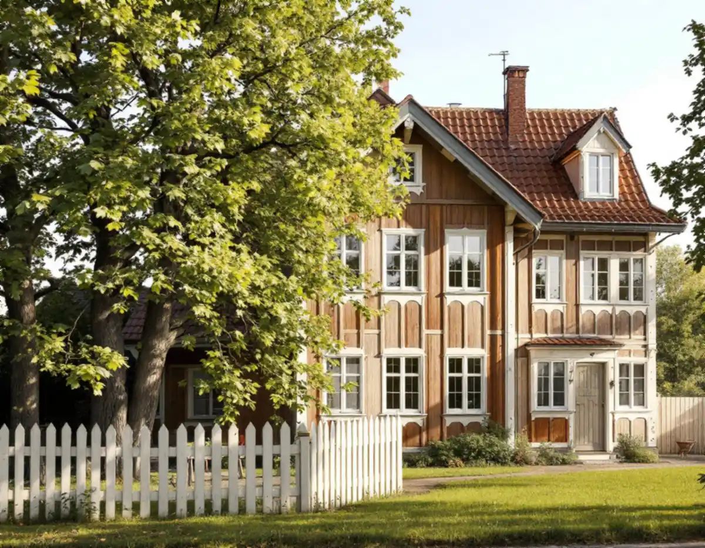
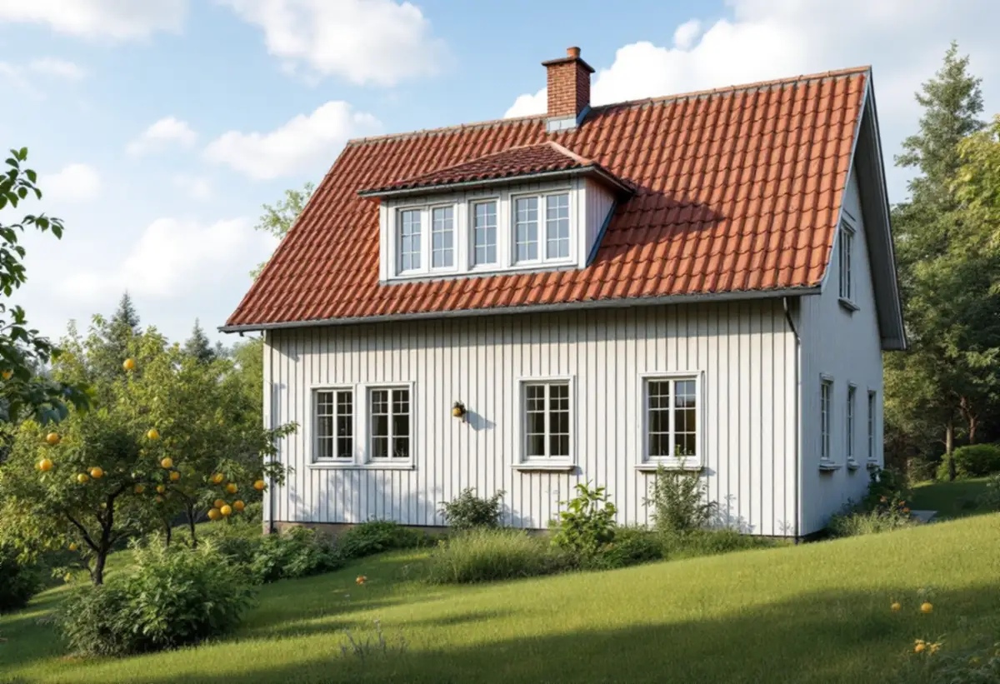
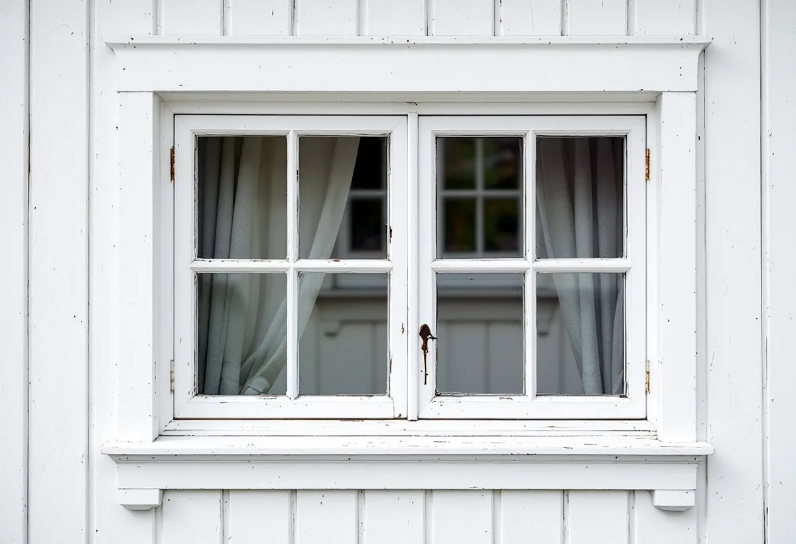

Platsbesök
Fönster, fasader och husets tillkomsttid går vi igenom.
I Duvbo kräver ett fönsterbyte bygglov, men prövningen är kostnadsfri. I resten av Sundbyberg beror det på huset och vilken fasad fönstren sitter i. Geal Entreprenad AB byter fönster i villor i Duvbo och åt föreningar i hela Sundbyberg.

Stadens miljöprogram för Duvbo berättar att föreningen Egna Hem bildades 1898 för att skapa egna hem för arbetare, köpte egendomen Dufvebol i Spånga församling året därpå och gjorde en stadsplan med 325 tomter. 1924 utökades området västerut med ytterligare 98 villatomter. Riksantikvarieämbetet pekade 1987 ut Duvbo som riksintresse för kulturmiljövården.
Husen är framför allt byggda vid sekelskiftet 1900 och under 1920-talet, med senare hus från 1930- och 1940-talen. Programmet beskriver sekelskiftesvillorna med fasader i fält av stående och liggande panel och snickarglädje, 1920-talsvillorna som enklare med locklistpanel och 1940-talets hus som slätputsade volymer med få detaljer.

I samband med en planändring för Duvbo utökades bygglovsplikten. Den omfattar bland annat utbyte, flyttning eller igensättning av fönster och dörrar, utbyte av fasadbeklädnad och takmaterial, omfärgning och andra ändringar som påverkar byggnadens yttre utseende. Åtgärder inom den utökade lovplikten är kostnadsfria.
Programmet ger också råd: vid underhåll och andra förändringar ska utförande och material om möjligt väljas i överensstämmelse med originalet eller husets tillkomsttid, och byggnadens tidstypiska uttryck får inte förvanskas genom byte av fönster. Äldre hus som har förändrats kraftigt bör enligt programmet om möjligt anpassas bättre till omgivningen i samband med andra åtgärder, och ett fönsterbyte är ett sådant tillfälle. Vi börjar därför med att dokumentera de fönster som finns och föreslår nya med samma indelning och proportioner.
Sundbybergs stad räknar nya fönster och dörrar, eller ändring av befintliga, som fasadändring. För ett en- eller tvåbostadshus krävs inte längre bygglov, förutsatt att huset inte är kulturhistoriskt värdefullt eller ligger i ett särskilt värdefullt bebyggelseområde som Duvbo. För flerbostadshus och andra byggnader krävs bygglov om ändringen görs på en fasad eller ett tak som vetter mot allmän plats.
Även när lov inte krävs kan en anmälan behövas om konstruktionen av bärande delar eller brandskyddet påverkas väsentligt, och då ska startbeskedet ha kommit innan arbetet börjar. Vill du vara säker kan du söka frivilligt bygglov, som enligt staden kostar lika mycket som ett vanligt bygglov.
Ansökan görs i stadens e-tjänst. Oftast krävs situationsplan som tydligt visar var åtgärden utförs, plan- och fasadritning, kulör- och materialbeskrivning och kontrollplan, och i vissa fall en detaljritning. Ritningarna ska vara fackmannamässigt utförda och skalenliga.
Som byggherre ansvarar du för att lagstiftningen följs även när ingen ansökan krävs. Vi tar fram ritningar och foton och stämmer av fönstren mot husets ålder. Om tjänsten i stort kan du läsa under fönsterbyte, och om fasaden under fasadrenovering i Sundbyberg.
Sundbybergs stad beskriver kontrollplanen som en förteckning över de kontroller byggherren ska göra och vem som gör dem. Förslaget lämnas in med bygglovsansökan och ska då inte vara ifyllt eller undertecknat, eftersom det bara visar vilka kontroller som ska göras. I enklare ärenden kan startbeskedet ges samtidigt som bygglovet.
När fönstren sitter skickas kontrollplanen in bestyrkt och underskriven, och därefter handläggs slutbeskedet. Med det avslutas ärendet hos staden. Vi fyller i våra kontrollpunkter för montage, tätning och drevning så att du har dem klara när slutbeskedet ska begäras.

Fönster, fasader och husets tillkomsttid går vi igenom.
Befintliga fönster mäts upp och fotograferas.
Fönster, montage och efterarbete står var för sig.
Ritningar, kulörer och kontrollplan i Duvbo eller mot allmän plats.
Fönstren byts, drevas och tätas och foder sätts tillbaka.
Vi går igenom fönstren och lämnar kontrollplanen ifylld.
Skatteverket räknar att reparera eller byta ut fönster på ett småhus som rotarbete, så en villa i Duvbo ger avdrag för arbetskostnaden. I en bostadsrätt ges inget avdrag för att byta fönster, bara för arbete på insidan av befintliga fönster som du ansvarar för enligt stadgarna.
Avdraget är högst 30 procent av arbetskostnaden och högst 50 000 kronor per person och år. Geal drar avdraget direkt på fakturan.
Antal fönster, om de tillverkas efter uppmätning med spröjs och profiler, glas och beslag, ställning och om bygglovshandlingar behövs. Efter ett gratis platsbesök får du ett skriftligt kostnadsförslag.
Byta eller renovera fönster.
Fönsterbyte i Stockholm →Takbyte, takbesiktning och plåtarbeten.
Takläggare i Sundbyberg →Rött lertegel och synliga taktassar i Duvbo.
Takrenovering i Sundbyberg →Duvbo, potten och medgivandena.
Attefallshus i Sundbyberg →Ventilationen, OVK och Duvbo.
Badrumsrenovering i Sundbyberg →Nytt hus, träd och regler i Duvbo.
Byggföretag i Sundbyberg →Puts och kulör i stadskärnan.
Fasadmålning i Sundbyberg →Panel och puts på Duvbos villor.
Fasadrenovering i Sundbyberg →Egnahemsvillornas fönster i Duvbo.
Fönsterrenovering i Sundbyberg →Trägolv i äldre villor och nya golv.
Golvläggare i Sundbyberg →Ta bort färg och fernissa från gamla golv.
Golvslipning i Sundbyberg →Duvbos villor och stadens lägenhetskök.
Köksrenovering i Sundbyberg →Lamellhus, kulörbyte och bostadsrätt.
Målare i Sundbyberg →Duvbos tak, rännor och lov.
Plåtslagare i Sundbyberg →Altan, pergola och staket enligt stadens guide.
Snickare i Sundbyberg →Container, ställning och grannar.
Takbyte i Sundbyberg →Ny tapet i äldre lägenheter.
Tapetsering i Sundbyberg →Duvbo, träden och riktlinjerna.
Tillbyggnad i Sundbyberg →Duvbos villor, kaminer och etablering.
Totalrenovering i Sundbyberg →